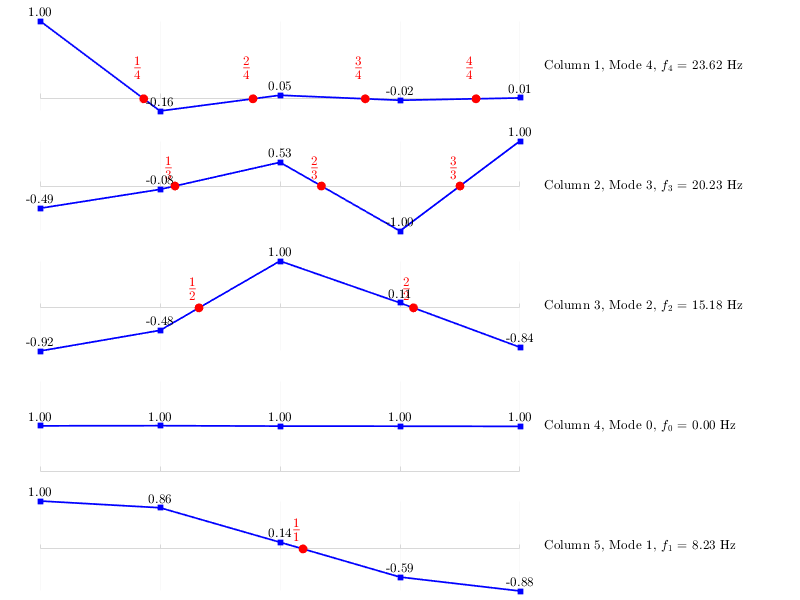

Contents
- Problem 0 (Textbook session 21)
- Problem 1 (Kundur Fig. 15.3) (a 555 MVA, 3,600 rpm steam turbine generator)
- Problem 2 (Kundur Fig. 15.4)(a 960 MVA, 1,800 rpm turbine generator)
- Problem 3 (Kundur Fig. 15.5)(a 191 MVA, 3,600 rpm turbine generator)
- Problem 4 (Kundur Fig. 15.6)(a 635 MVA, 1,800 rpm turbine generator)
- Problem 5 ("First benchmark model for computersimulation of subsynchronous resonance,” IEEE Trans. Power Apparat.Syst., vol. 96, pp. 1565–1572, Sept.–Oct. 1977)(IEEE fisrt benchmark model)
Problem 0 (Textbook session 21)
fb = 50;
H = 0.5*[0.129 , 0.2161, 1.1926, 1.2281, 1.2062, 0.0045];
stiffness = [16.0858, 29.1075, 43.365, 59.0483, 2.3517];
torsional_analysis(fb,H,stiffness)
Torsional_Mass_Matrix (=diag(2H_i)) =
0.1290 0 0 0 0 0
0 0.2161 0 0 0 0
0 0 1.1926 0 0 0
0 0 0 1.2281 0 0
0 0 0 0 1.2062 0
0 0 0 0 0 0.0045
-----------------------------------
Torsional_Stiffness_Matrix =
16.0858 -16.0858 0 0 0 0
-16.0858 45.1933 -29.1075 0 0 0
0 -29.1075 72.4725 -43.3650 0 0
0 0 -43.3650 102.4133 -59.0483 0
0 0 0 -59.0483 61.4000 -2.3517
0 0 0 0 -2.3517 2.3517
-----------------------------------
State_Matrix =
124.6961 -124.6961 0 0 0 0
-74.4368 209.1314 -134.6946 0 0 0
0 -24.4068 60.7685 -36.3617 0 0
0 0 -35.3106 83.3917 -48.0810 0
0 0 0 -48.9540 50.9037 -1.9497
0 0 0 0 -522.6000 522.6000
-----------------------------------
eigenvalues =
283.0160 0 32.1584 81.3760 130.1662 524.7748
-----------------------------------
Frequencies (Hz) =
47.4570 0 15.9971 25.4474 32.1843 64.6222
-----------------------------------
V =
-0.6162 -0.4082 0.6648 -0.8970 -0.5067 0
0.7824 -0.4082 0.4933 -0.3116 0.0222 0
-0.0886 -0.4082 0.2808 0.2001 0.2931 0
0.0165 -0.4082 -0.1102 0.0957 -0.5742 0.0005
-0.0034 -0.4082 -0.3236 -0.1430 0.3434 -0.0042
-0.0075 -0.4082 -0.3449 -0.1693 0.4573 1.0000
-----------------------------------
normalized_V =
-0.7876 1.0000 1.0000 1.0000 0.8824 0
1.0000 1.0000 0.7421 0.3474 -0.0387 0
-0.1133 1.0000 0.4224 -0.2231 -0.5103 0
0.0211 1.0000 -0.1658 -0.1067 1.0000 0.0005
-0.0044 1.0000 -0.4868 0.1594 -0.5980 -0.0042
-0.0095 1.0000 -0.5188 0.1888 -0.7964 1.0000
Problem 1 (Kundur Fig. 15.3) (a 555 MVA, 3,600 rpm steam turbine generator)
fb = 60;
H = [0.124 , 0.232, 1.155, 1.192, 0.855];
stiffness = [21.8, 48.4, 75.6, 62.3, 1.98];
torsional_analysis(fb,H,stiffness)
Torsional_Mass_Matrix (=diag(2H_i)) =
0.2480 0 0 0 0
0 0.4640 0 0 0
0 0 2.3100 0 0
0 0 0 2.3840 0
0 0 0 0 1.7100
-----------------------------------
Torsional_Stiffness_Matrix =
21.8000 -21.8000 0 0 0
-21.8000 70.2000 -48.4000 0 0
0 -48.4000 124.0000 -75.6000 0
0 0 -75.6000 137.9000 -62.3000
0 0 0 -62.3000 62.3000
-----------------------------------
State_Matrix =
87.9032 -87.9032 0 0 0
-46.9828 151.2931 -104.3103 0 0
0 -20.9524 53.6797 -32.7273 0
0 0 -31.7114 57.8440 -26.1326
0 0 0 -36.4327 36.4327
-----------------------------------
eigenvalues =
202.7057 96.1517 60.7214 0 27.5740
-----------------------------------
Frequencies (Hz) =
43.9966 30.3015 24.0800 0 16.2269
-----------------------------------
V =
0.6036 0.7164 -0.9088 0.4472 -0.7066
-0.7883 -0.0672 -0.2810 0.4472 -0.4850
0.1167 -0.3582 0.1653 0.4472 -0.2569
-0.0266 0.5079 0.1443 0.4472 0.1055
0.0058 -0.3099 -0.2165 0.4472 0.4340
-----------------------------------
normalized_V =
-0.7657 1.0000 1.0000 1.0000 1.0000
1.0000 -0.0938 0.3092 1.0000 0.6863
-0.1480 -0.5000 -0.1819 1.0000 0.3636
0.0337 0.7090 -0.1588 1.0000 -0.1494
-0.0074 -0.4325 0.2382 1.0000 -0.6142
Problem 2 (Kundur Fig. 15.4)(a 960 MVA, 1,800 rpm turbine generator)
fb = 60;
H = [0.176 , 1.427, 1.428, 1.428, 0.869];
stiffness = [17.78, 27.66, 31.31, 37.25];
torsional_analysis(fb,H,stiffness)
Torsional_Mass_Matrix (=diag(2H_i)) =
0.3520 0 0 0 0
0 2.8540 0 0 0
0 0 2.8560 0 0
0 0 0 2.8560 0
0 0 0 0 1.7380
-----------------------------------
Torsional_Stiffness_Matrix =
17.7800 -17.7800 0 0 0
-17.7800 45.4400 -27.6600 0 0
0 -27.6600 58.9700 -31.3100 0
0 0 -31.3100 68.5600 -37.2500
0 0 0 -37.2500 37.2500
-----------------------------------
State_Matrix =
50.5114 -50.5114 0 0 0
-6.2299 15.9215 -9.6917 0 0
0 -9.6849 20.6478 -10.9629 0
0 0 -10.9629 24.0056 -13.0427
0 0 0 -21.4327 21.4327
-----------------------------------
eigenvalues =
58.4379 42.8394 24.1401 0 7.1014
-----------------------------------
Frequencies (Hz) =
23.6229 20.2259 15.1829 0 8.2349
-----------------------------------
V =
-0.9867 -0.3111 0.5506 -0.4472 -0.5899
0.1548 -0.0472 0.2874 -0.4472 -0.5070
-0.0450 0.3312 -0.5977 -0.4472 -0.0822
0.0184 -0.6286 -0.0635 -0.4472 0.3463
-0.0106 0.6294 0.5030 -0.4472 0.5179
-----------------------------------
normalized_V =
1.0000 -0.4942 -0.9212 1.0000 1.0000
-0.1569 -0.0751 -0.4809 1.0000 0.8594
0.0456 0.5262 1.0000 1.0000 0.1393
-0.0186 -0.9988 0.1063 1.0000 -0.5871
0.0108 1.0000 -0.8416 1.0000 -0.8780

Problem 3 (Kundur Fig. 15.5)(a 191 MVA, 3,600 rpm turbine generator)
fb = 60;
H = [0.099 , 0.337, 3.68, 0.946];
stiffness = [37.95, 81.91, 82.74];
torsional_analysis(fb,H,stiffness)
Torsional_Mass_Matrix (=diag(2H_i)) =
0.1980 0 0 0
0 0.6740 0 0
0 0 7.3600 0
0 0 0 1.8920
-----------------------------------
Torsional_Stiffness_Matrix =
37.9500 -37.9500 0 0
-37.9500 119.8600 -81.9100 0
0 -81.9100 164.6500 -82.7400
0 0 -82.7400 82.7400
-----------------------------------
State_Matrix =
191.6667 -191.6667 0 0
-56.3056 177.8338 -121.5282 0
0 -11.1291 22.3709 -11.2418
0 0 -43.7315 43.7315
-----------------------------------
eigenvalues =
291.2605 0 92.1201 52.2223
-----------------------------------
Frequencies (Hz) =
52.7383 0 29.6594 22.3313
-----------------------------------
V =
-0.8872 -0.5000 0.8815 -0.5114
0.4610 -0.5000 0.4578 -0.3721
-0.0192 -0.5000 -0.0855 -0.1476
0.0034 -0.5000 0.0773 0.7604
-----------------------------------
normalized_V =
1.0000 1.0000 1.0000 -0.6726
-0.5196 1.0000 0.5194 -0.4893
0.0217 1.0000 -0.0970 -0.1942
-0.0038 1.0000 0.0877 1.0000
Problem 4 (Kundur Fig. 15.6)(a 635 MVA, 1,800 rpm turbine generator)
fb = 60;
H = [0.254 , 0.983, 1.001, 1.009, 1.035, 0.013];
stiffness = [13.9, 18.2, 25.2, 54.9, 5.7];
torsional_analysis(fb,H,stiffness)
Torsional_Mass_Matrix (=diag(2H_i)) =
0.5080 0 0 0 0 0
0 1.9660 0 0 0 0
0 0 2.0020 0 0 0
0 0 0 2.0180 0 0
0 0 0 0 2.0700 0
0 0 0 0 0 0.0260
-----------------------------------
Torsional_Stiffness_Matrix =
13.9000 -13.9000 0 0 0 0
-13.9000 32.1000 -18.2000 0 0 0
0 -18.2000 43.4000 -25.2000 0 0
0 0 -25.2000 80.1000 -54.9000 0
0 0 0 -54.9000 60.6000 -5.7000
0 0 0 0 -5.7000 5.7000
-----------------------------------
State_Matrix =
27.3622 -27.3622 0 0 0 0
-7.0702 16.3276 -9.2574 0 0 0
0 -9.0909 21.6783 -12.5874 0 0
0 0 -12.4876 39.6928 -27.2052 0
0 0 0 -26.5217 29.2754 -2.7536
0 0 0 0 -219.2308 219.2308
-----------------------------------
eigenvalues =
0 6.2142 23.6689 38.3297 62.9324 222.4218
-----------------------------------
Frequencies (Hz) =
0 7.7033 15.0340 19.1317 24.5145 46.0866
-----------------------------------
V =
-0.4082 0.6249 0.6769 0.9070 0.0345 0
-0.4082 0.4830 0.0914 -0.3635 -0.0448 0
-0.4082 0.0504 -0.5894 0.1713 0.1993 -0.0001
-0.4082 -0.2869 0.0272 0.0359 -0.6209 0.0022
-0.4082 -0.3762 0.2866 -0.0768 0.4389 -0.0146
-0.4082 -0.3872 0.3213 -0.0931 0.6156 0.9999
-----------------------------------
normalized_V =
1.0000 1.0000 1.0000 1.0000 -0.0555 0
1.0000 0.7729 0.1350 -0.4008 0.0722 0
1.0000 0.0806 -0.8708 0.1889 -0.3210 -0.0001
1.0000 -0.4592 0.0402 0.0396 1.0000 0.0022
1.0000 -0.6020 0.4234 -0.0847 -0.7069 -0.0146
1.0000 -0.6196 0.4746 -0.1027 -0.9915 1.0000
Problem 5 ("First benchmark model for computersimulation of subsynchronous resonance,” IEEE Trans. Power Apparat.Syst., vol. 96, pp. 1565–1572, Sept.–Oct. 1977)(IEEE fisrt benchmark model)
fb=60;
H = [0.092897 0.155589 0.858670 0.884215 0.868495 0.0342165];
stiffness = [19.303 34.929 52.038 70.858 2.82];
torsional_analysis(fb,H,stiffness)
Torsional_Mass_Matrix (=diag(2H_i)) =
0.1858 0 0 0 0 0
0 0.3112 0 0 0 0
0 0 1.7173 0 0 0
0 0 0 1.7684 0 0
0 0 0 0 1.7370 0
0 0 0 0 0 0.0684
-----------------------------------
Torsional_Stiffness_Matrix =
19.3030 -19.3030 0 0 0 0
-19.3030 54.2320 -34.9290 0 0 0
0 -34.9290 86.9670 -52.0380 0 0
0 0 -52.0380 122.8960 -70.8580 0
0 0 0 -70.8580 73.6780 -2.8200
0 0 0 0 -2.8200 2.8200
-----------------------------------
State_Matrix =
103.8946 -103.8946 0 0 0 0
-62.0320 174.2797 -112.2477 0 0 0
0 -20.3390 50.6405 -30.3015 0 0
0 0 -29.4261 69.4944 -40.0683 0
0 0 0 -40.7936 42.4171 -1.6235
0 0 0 0 -41.2082 41.2082
-----------------------------------
eigenvalues =
235.8394 109.1485 68.3452 0 42.7500 25.8514
-----------------------------------
Frequencies (Hz) =
47.4563 32.2845 25.5470 0 20.2048 15.7119
-----------------------------------
V =
0.6161 0.5434 -0.8874 0.4082 -0.1088 -0.5220
-0.7825 -0.0275 -0.3036 0.4082 -0.0641 -0.3921
0.0886 -0.3162 0.2038 0.4082 -0.0149 -0.2300
-0.0165 0.6290 0.0847 0.4082 0.0391 0.0750
0.0035 -0.3903 -0.1473 0.4082 0.0371 0.2506
-0.0007 0.2367 0.2236 0.4082 -0.9904 0.6726
-----------------------------------
normalized_V =
-0.7874 0.8638 1.0000 1.0000 0.1099 -0.7761
1.0000 -0.0437 0.3422 1.0000 0.0647 -0.5830
-0.1133 -0.5027 -0.2297 1.0000 0.0151 -0.3420
0.0211 1.0000 -0.0955 1.0000 -0.0395 0.1115
-0.0045 -0.6205 0.1660 1.0000 -0.0374 0.3727
0.0009 0.3763 -0.2520 1.0000 1.0000 1.0000